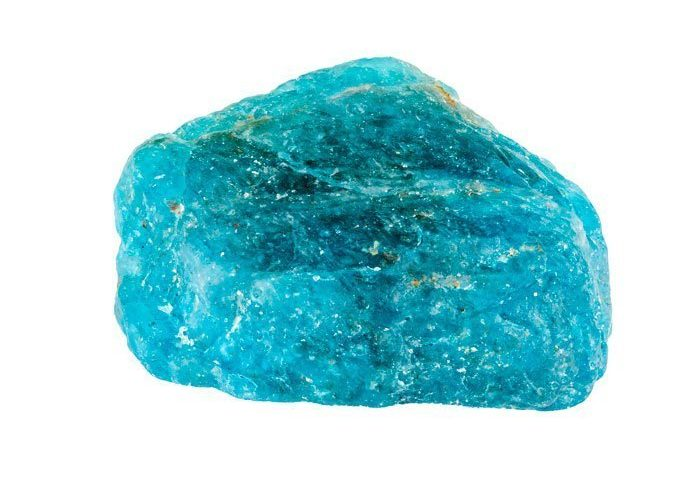

Apatite
Information
Apatite can be found in Brazil, Madagascar, Mexico, Burma and Russia where is also the largest deposit in the town Kirovsk. There are many variants of apatite stones. They can come in yellow, blue, green, grey or brown hues. Blue gemstones are prized for their beauty, and blue apatite is often favoures over those of different colors. People found out that blue apatite can help with motivation, ambition, self-confidence and self-acceotance. In generel the blue stone is associated with the mind's connection in the spiritual world. Blue Apatite is a stone of manifestation attuned to the future, activating psychic abilities and allowing expansion of knowledge. The stone is known to increase the strenght and frequency of lucid dreaming.
Health Benefits
Link-TextOutfitInspos
Some outfits inspos who match perfectly with the black green stone